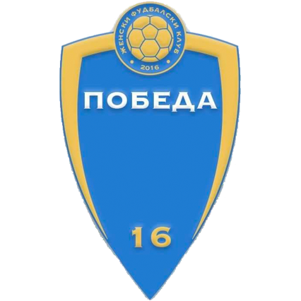

Borec vs Pobeda 16
Liga e Dytë e Femrave 24/25 - Raundi 8
Rezultati përfundimtar : 4 - 1
Data: 02.03.2025 | Koha: 11:30 | Stadiumi: Gradski Stadion Veles
Gjyqtarët
- Gjyqtari kryesor: Monika Daštevska (Скопје)
- Ndihmësi i parë: Aleksandar Neškoski (Скопје)
- Ndihmësi i dytë: Teodora Krstevska (Скопје)
Formacionet

Formacioni startues
- 12. Gordana Milošević 🧤 (C)
- 2. Iva Čauševska
- 3. Tamara Milošević
- 4. Sofija Novačeva ↓65'
- 6. Zvezda Nikolovska
- 7. Vesna Milojević
- 10. Meri Trajkovska
- 11. Ema Nedelkova ⚽︎ 46' ⚽︎ 62' ↓72'
- 13. Lora Jovanovska ↓80'
- 15. Sanja Perčinkovska ⚽︎ 50' ⚽︎ 72'
- 18. Melani Trajkovska
Rezervat
- 5. Aleksandra Pešova ↑65'
- 16. Angelina Bosilkova ↑72'
- 17. Mihaela Mirova
- 20. Marija Budimova ↑80'

Pobeda 16
Formacioni startues
- 21. Ubavka Trajkova 🧤
- 2. Saška Zanova ↓72'
- 4. Tijana Nikolovska ↓60'
- 6. Monika Čilevska
- 7. Teodora Ristova
- 9. Viktorija Petkova
- 10. Sofija Čilevska ⚽︎ 12' ↓67'
- 11. Dora Zafirova
- 15. Natalija Kavazova (C)
- 17. Katerina Trajkova
- 19. Marija Krapevska
Rezervat
- 3. Kristina Rizova ↑72'
- 13. Angela Tasevska ↑60'
- 14. Kristina Peev ↑67'
Kronologjia
- ⚽ 12' - Gol nga Sofija Čilevska (Pobeda 16)
- ⚽ 46' - Gol nga Ema Nedelkova (Borec)
- ⚽ 50' - Gol nga Sanja Perčinkovska (Borec)
- 🔄 60' - Zëvendësim për Pobeda 16: hyn Angela Tasevska (13) në vend të Tijana Nikolovska (4)
- ⚽ 62' - Gol nga Ema Nedelkova (Borec)
- 🔄 65' - Zëvendësim për Borec: hyn Aleksandra Pešova (5) në vend të Sofija Novačeva (4)
- 🔄 67' - Zëvendësim për Pobeda 16: hyn Kristina Peev (14) në vend të Sofija Čilevska (10)
- ⚽ 72' - Gol nga Sanja Perčinkovska (Borec)
- 🔄 72' - Zëvendësim për Borec: hyn Angelina Bosilkova (16) në vend të Ema Nedelkova (11)
- 🔄 72' - Zëvendësim për Pobeda 16: hyn Kristina Rizova (3) në vend të Saška Zanova (2)
- 🔄 80' - Zëvendësim për Borec: hyn Marija Budimova (20) në vend të Lora Jovanovska (13)